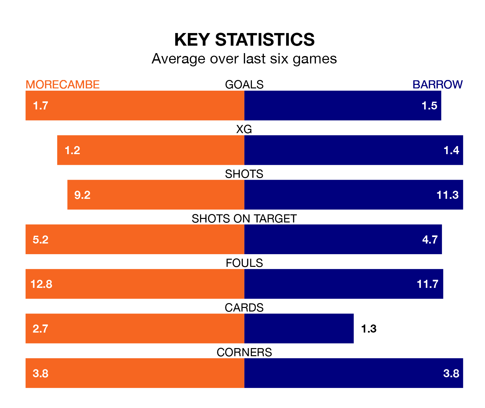

Barrow face Morecambe on Monday seeking to protect their long unbeaten run in EFL League Two.
The Bluebirds are unbeaten in six, with four wins and two draws, ahead of the 3pm kick-off.
They face a Morecambe team who have won just two and lost four over the same number of games.
With 61 goals in 40 games so far this season, Morecambe are scoring at the league's average rate with 1.5 goals per game. And they are conceding more than average, letting in 69 goals at a rate of 1.7 per game.
Barrow, meanwhile, are below average scorers, with 1.4 goals per game. They have conceded 1.1 goals per game.
With Paul Farman between the sticks, the Bluebirds can rely on one of the league's safest pair of hands. He has kept 14 clean sheets in his 37 appearances this season, and only two other 'keepers – Stockport County's Ben Hinchiffe and AFC Wimbledon's Alex Bass – have been able to prevent the opposition scoring on more occasions in EFL League Two.
In the Shrimps's net, Stuart Moore has three clean sheets in 12 games. He has conceded a goal every 74 minutes, 20% more often than the 88 minutes between goals for Farman.
The visitors are fifth in the table after 39 games, of which they have won 18 and drawn 13, earning 67 points.
The home team are five places behind Barrow in 10th, with 16 wins and nine draws putting them on 57 points.
In the last five years, Morecambe and Barrow have played each other on four occasions. Morecambe won three of them and Barrow one.
On average, the Shrimps scored 1.5 goals and the Bluebirds 0.8 in those matches.
Their last meeting was on October 31, when Barrow won 1-0 at home.
Morecambe's last match was on Friday, a 2-1 win against Accrington Stanley, with Christopher Stokes and Nelson Khumbeni getting the goals for the Shrimps.
Barrow beat Grimsby Town 3-1 last time out, also on Friday, with Cole Stockton (two) and Robbie Gotts on the scoresheet.
Updated: 10:31 (UTC), 31/03/24